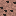
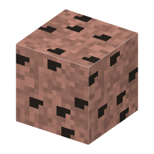

①子ども 花崗岩の中にある、黒くて重い結晶の入った石。タンタルの元。
②学生 花崗岩の中だけにある、とてもまれな鉱石（リチア輝石よりまれ）。つるはしで掘るとタンタル石が出る。
③大人 花崗岩のマグマが最後に固まった所（ペグマタイト）に、リチウム・スズ・タンタルなどが集まる。
④ガチ タンタルの鉱石の多くは中部アフリカでとれ、紛争の資金になった（紛争鉱物）。今は出どころを確かめて買う決まりがある。
（作り方のレシピは無い：拾う・掘る・ほかの方法）
（このアイテムを使うレシピは無い）